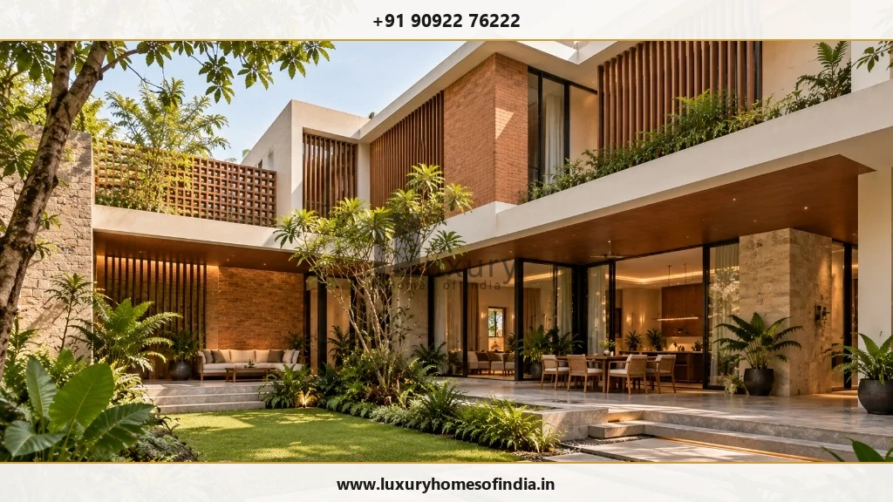
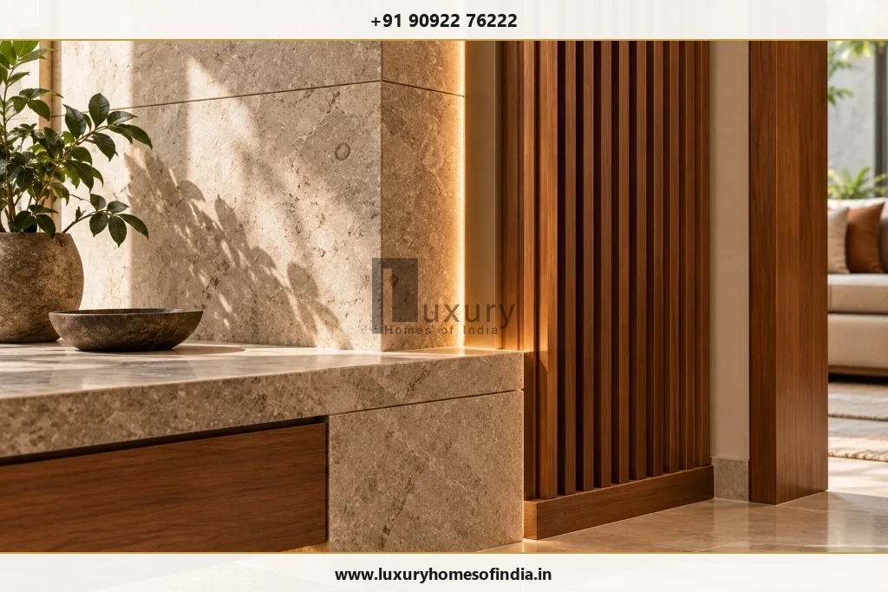
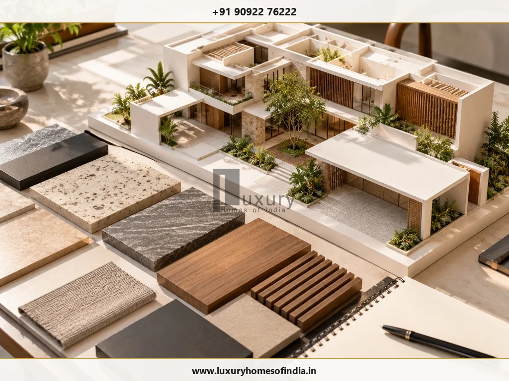
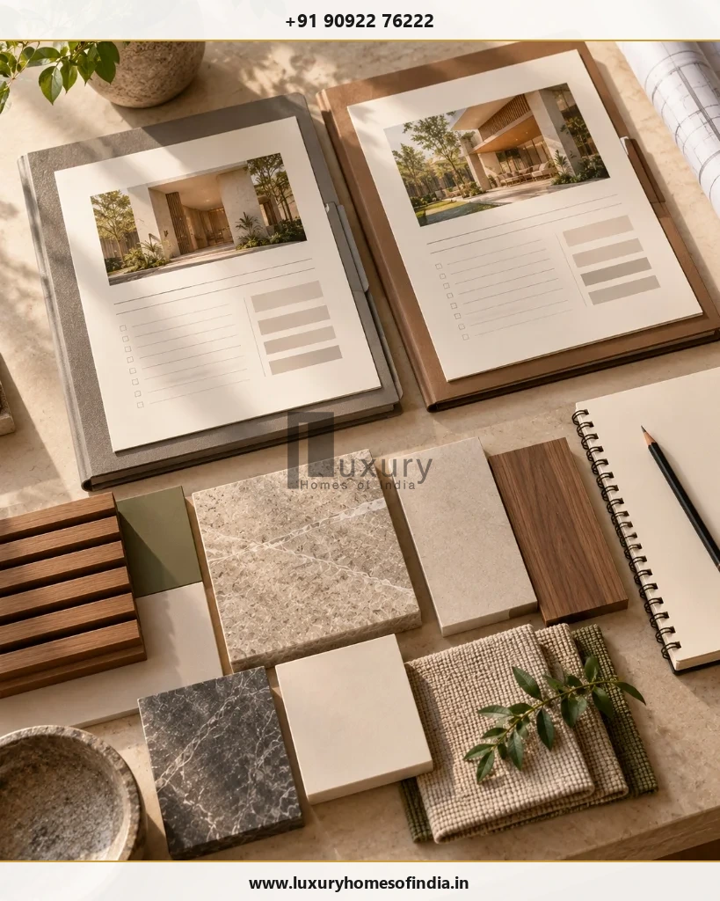

Luxury Home Builders in Chennai: A Guide to Choosing the Right Builder
Evaluating architectural design, construction scope, engineering coordination, material specifications, and proposal comparisons for custom residences.
Executive Summary: Selecting a Luxury Home Builder
Choosing luxury home builders in Chennai means evaluating more than architectural photographs, premium materials or a quoted rate per square foot. The right builder should understand your family's requirements, explain design and engineering decisions, define what the contract includes and provide a documented process for managing changes and handover. Luxury Homes of India unifies architectural design, structural engineering, turnkey villa construction, and luxury interior execution under a single coordinated workflow.
Choosing luxury home builders in Chennai means evaluating more than architectural photographs, premium materials or a quoted rate per square foot. The right builder should understand your family's requirements, explain design and engineering decisions, define what the contract includes and provide a documented process for managing changes and handover. Before appointing a team, review comparable residential work, clarify who is responsible for architectural and structural drawings, compare material specifications and exclusions, and understand how progress, payments and variations will be managed. If you want a home that combines bespoke architecture, functional interiors and coordinated construction, begin with a clear brief covering your plot, lifestyle, priorities and budget. A structured consultation can help establish the services required, the information still needed and the next steps towards a detailed proposal.

Choosing a Builder for the Way You Want to Live
A luxury home should reflect the people who live in it, not simply reproduce a fashionable façade.
Your priorities might include generous entertaining areas, quieter private rooms, a home office, spaces for multiple generations or a courtyard that brings daylight into the house. You may also want to consider Vastu preferences, accessible circulation, custom joinery, integrated technology or a closer relationship between indoor spaces and the garden.
Start by listing the needs that matter most to your family. Separate essential requirements from optional features, and identify which decisions need to be resolved during planning rather than postponed until construction.
For Luxury Homes of India, the proposed starting point is your project brief. The services, responsibilities and deliverables applicable to your home should be confirmed in the final agreement.
What to Look for When Choosing Luxury Home Builders in Chennai
Beautiful photographs can introduce a builder's work, but a careful review should establish what the team actually designed, constructed and delivered.
1. Relevant Residential Experience
Ask to review completed homes comparable to your proposed project. Look beyond floor area and façade style to understand the design challenges, construction scope and level of interior execution involved.
Distinguish completed projects from ongoing construction, concept designs and visualisations. Ask which responsibilities belonged to the builder and which were handled by separate architects, consultants or contractors.
2. Clear Design and Engineering Responsibilities
Find out who prepares the architectural drawings, structural design and building-services layouts, and who coordinates them before work begins.
Large openings, double-height spaces, terraces and custom staircases need coordinated design and engineering. Decisions should be reviewed against structural requirements, services, buildability and the intended finish before they become expensive site changes.
3. A Specification You Can Evaluate
A proposal described simply as “premium” or “luxury” leaves too much open to interpretation.
Request written material descriptions, relevant product brands or performance requirements, allowances, quantities where applicable, and any exclusions. Clarify who selects and approves finishes and how substitutions are handled if a specified product is unavailable.
4. A Documented Approach to Changes
Design changes may affect procurement, cost, coordination and the construction programme.
Your agreement should explain how changes are submitted, assessed, priced and approved. Establish who can authorise additional work and how revised drawings or specifications will be recorded.
5. Defined Inspection and Handover Requirements
Before signing, understand the inspections, testing, snagging and handover documents included in the scope.
Any warranty, defect-liability arrangement or post-handover support should be described accurately in the contract. Ask which documents will be provided and who is responsible for resolving outstanding items.
Why Consider Luxury Homes of India?

Bespoke Residential Planning
A personalised home begins with the requirements of the people who will use it. Room relationships, privacy, circulation, natural light and architectural preferences should be considered together rather than as isolated decisions.
Coordinated Design, Engineering and Interiors
Architecture, structure, building services and interior detailing need to work together. Establishing responsibilities and reviewing interfaces early can help identify conflicts before they reach site execution.
A Scope Shaped Around Your Requirements
Your project may begin with a developed architectural design or with a plot and an initial brief. The next steps will depend on the information available, the services required and the responsibilities agreed with the appointed team.
A Chennai Point of Contact
Discuss your plot location, drawings, proposed home and service requirements with the team using the verified business contact details published on this page.
The Capabilities to Discuss for Your Home

Architectural design and planning: Develop a layout that balances privacy, circulation, daylight and the spaces your household needs. Discuss architectural preferences and Vastu considerations early, alongside site conditions and practical requirements.
Structural engineering: Coordinate architectural intent with the foundation and structural design appropriate to the site, building configuration and applicable requirements. Confirm who is responsible for the engineering design, drawings, review and related approvals.
Turnkey villa construction: Clarify what turnkey delivery means for your particular project. Identify the construction activities, consultant responsibilities, material allowances, external works and handover requirements covered by the agreement.
Luxury interior execution: Coordinate flooring, lighting, kitchens, bathrooms, joinery, wardrobes and custom furniture with the architecture and building services. Detailed specifications and timely selections help the project team understand what is to be delivered.
Smart-home integration: Identify the automation functions you actually need, such as lighting control, shading, climate management or security integration. Consider electrical provisions, network requirements, system compatibility, commissioning and future maintenance during planning.
The availability and exact scope of each service should be confirmed directly with Luxury Homes of India before a project commitment.
How to Compare Luxury Home Construction Proposals

When comparing luxury home builders, compare the complete scope rather than relying on a single rate per square foot. Two quotations may use different assumptions about materials, consultant services, external works, exclusions and handover.
Proposal Evaluation Matrix
| Proposal Element | Questions to Resolve Before Signing |
|---|---|
| Design deliverables | Which drawings, revisions and consultant inputs are included? |
| Construction works | Which civil, structural and finishing activities are covered? |
| Materials | What products, specifications, allowances and substitution rules apply? |
| Building services | Are electrical, plumbing, cooling and automation included? |
| External works | Are boundary walls, gates, drainage, paving and landscaping included? |
| Commercial terms | What are the payment milestones, exclusions and variation procedures? |
| Programme | What stages, dependencies and client decisions affect progress? |
| Handover | Which inspections, tests, documents and contractual support arrangements apply? |
Ask each builder to clarify ambiguous entries in writing. Confirm the responsibilities of the client, builder, architect and specialist consultants before comparing totals.
A clearly documented proposal creates a shared reference for decisions throughout the project. It does not eliminate every uncertainty, but it makes assumptions and responsibilities easier to identify.
From Your First Conversation to an Agreed Project Brief
Step 1: Share your vision
Explain who will live in the home, how the spaces will be used and which features are essential. Reference photographs can help communicate architectural preferences, but your daily routines and priorities are equally important.
Step 2: Review the available information
Prepare your plot location and dimensions, available drawings, site information and approximate space requirements. If the design is not yet developed, identify the planning and professional inputs needed before a detailed construction proposal can be prepared.
Step 3: Establish the scope and next steps
Discuss the services required, the decisions that remain open, the responsibilities of each party and the information needed to develop a more detailed proposal.
You do not need every finish selected before making an enquiry. You do need a clear process for documenting decisions and agreeing what happens next.
Start Your Construction Project with a Clear Brief
Bring your plot details, design ideas, and budget expectations. Speak with Luxury Homes of India about our integrated architectural design, structural engineering, and turnkey construction services.
Frequently Asked Questions

Discuss Your Chennai Home Project
A well-planned home begins with clear expectations, coordinated decisions and an agreed scope of work.
Speak with Luxury Homes of India about your proposed residence, the services you may need and the information required to establish the next steps.
Luxury Homes of India — Chennai Office
Phone: +91 90922 76222
Email: info@luxuryhomesofindia.in
Office: #85, 4th Floor, Lotus Tower, Guindy, Chennai – 600032.